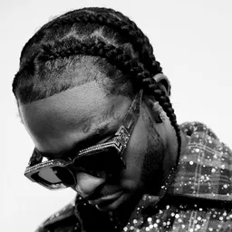
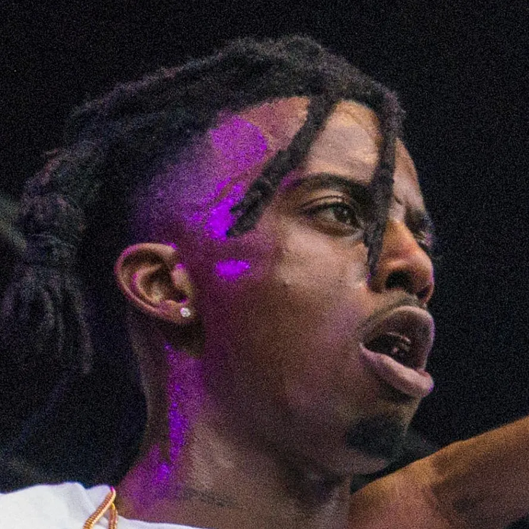
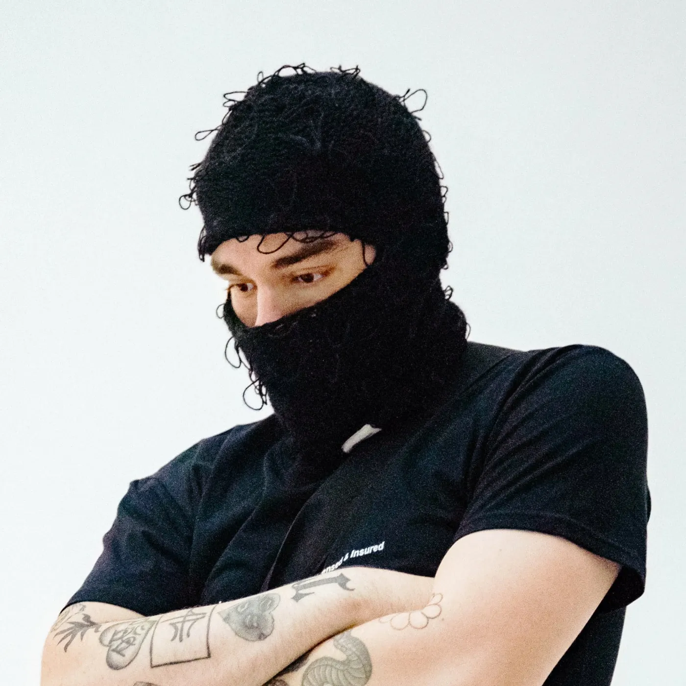
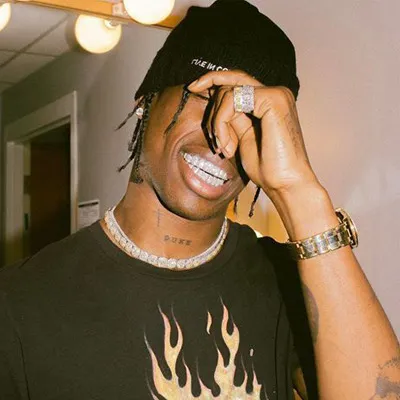
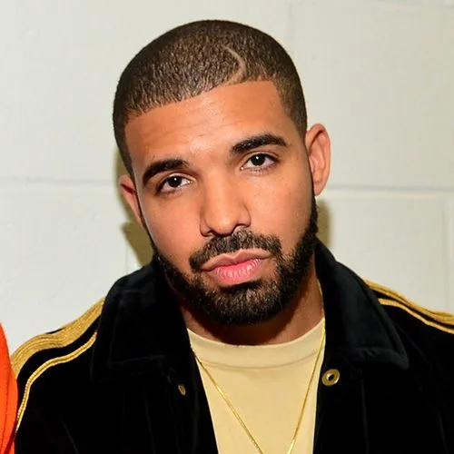
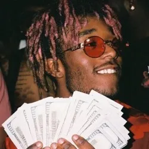

GENIUSES OF RAP INDUSTRY
Pop Smoke

Bashar Barakah Jackson (July 20, 1999 – February 19, 2020), known
professionally as Pop Smoke, was an American rapper. Born and
raised in Brooklyn, New York City, Pop Smoke began his musical
career in late 2018 with his debut single "MPR (Panic Part 3
Remix)". He rose to fame with the release of his breakout singles
"Welcome to the Party" and "Dior" in 2019. He often collaborated
with UK drill artists and producers, who employed more minimal and
aggressive instrumentation than American drill artists from
Chicago, reintroducing the sound as Brooklyn drill.
Read more...
Playboi Carti

Jordan Terrell Carter, born September 13, 1996, known
professionally as Playboi Carti, is an American rapper. Carter was
initially signed to local underground label Awful Records prior to
signing with ASAP Mob's AWGE Label under Interscope Records. After
gaining a cult following early in his career, Carter garnered
mainstream attention in 2017.
Read more...
Yeat

Noah Olivier Smith, born February 26 2000, known professionally as
Yeat, is an American rapper, singer-songwriter, and record
producer. He gained recognition in mid-2021 after the release of
his mixtape 4L and debut studio album Up 2 Me, with tracks from
the latter, including "Money So Big" and "Get Busy" gaining
popularity on TikTok. Read more...
Travis Scott

Jacques Bermon Webster II, born April 30 1991, better known by his
stage name Travis Scott, is an American rapper, singer,
songwriter, and record producer. His stage name is the namesake of
a favorite uncle combined with the first name of one of his
inspirations, Kid Cudi.
Read more...
Drake

Aubrey Drake Graham, born October 24 1986, is a Canadian rapper,
singer and actor. An influential figure in contemporary popular
music, Drake has been credited for popularizing singing and R&B
sensibilities in hip hop. Gaining recognition by starring as Jimmy
Brooks in the CTV teen drama series Degrassi: The Next Generation
(2001–2008), Drake pursued a career in music releasing his debut
mixtape Room for Improvement in 2006. He followed this with the
mixtapes Comeback Season (2007) and So Far Gone (2009) before
signing with Young Money Entertainment.
Read more...
Lil Uzi Vert

Symere Bysil Woods, born July 31 1995, known professionally as Lil
Uzi Vert, is an American rapper, singer, and songwriter. They are
characterized by their facial tattoos, facial piercings, eccentric
hairstyles and androgynous fashion, imagery built on a melodic
approach to trap. Born and raised in Philadelphia, Lil Uzi Vert
gained initial recognition following the release of the commercial
mixtape Luv Is Rage (2015), which led to a recording contract with
Atlantic Records, to whom they signed under DJ Drama's Generation
Now imprint. Read more...